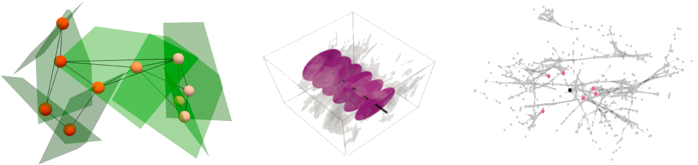
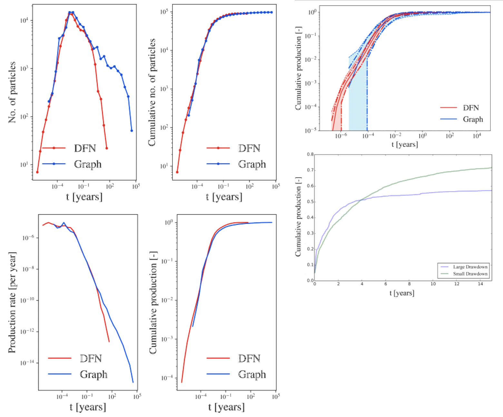

My tenure at UT Austin, Los Alamos National Lab, and USC
was marked by extensive work in geoscientific simulations.
These projects ranged from modeling subsurface flow to
simulating geological formations.
Each project presented unique challenges,
such as handling large datasets
and creating accurate simulation models.
My contributions not only advanced the computational aspects
of these projects but also provided valuable insights
into earth sciences,
demonstrating the power of computational modeling
in understanding and solving complex geoscientific problems.

